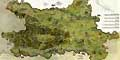

Holwik d.o.o. osnovan je sa ciljem
proizvodnje vrhunskih reznih alata za drvo. Osnovna djelatnost sastoji
se od proizvodnje tračnih i kružnih pila za obradu drveta.
Osim proizvodnje novih tlačenih i stelitiranih pila pružamo i usluge savjetovanja i održavanja u cijelom
radnom vijeku pila. Osim pomoći kod upuštanja novih pila u radi,
osiguravamo kompletnu uslugu održavanja pila. Čast nam je naglasiti
da kao sirovinu za sve naše alate koristimo samo najkvalitetniji
švedski čelik firme Uddeholm.
Želite li unaprijediti svoje poslovanje, te učiniti svoju proizvodnju
efikasnijom oslonite se na kvalitetu, odnosno Holwik. Slobodno nas
kontaktirajte, radujemo se Vašem pozivu.
Povećanje efikasnosti u pilanskoj preradi
Problem efikasnijeg korištenja sredstava rada prisutan je u svakoj proizvodnji. Učin strojeva u pilanskoj preradi u određenom periodu proporcionalan je sa posmičnom brzinom, visinom reza i vremenom rada u promatranom periodu. Ovi parametri ovisni su u prvom redu o: utjecaju alata, utjecaju stroja, utjecaju obratka i utjecaju poslužitelja. Ovi utjecaji očituju se kroz njihovo ograničavanje posmične brzine, te vremena efektivnog rada stroja u promatranome periodu...
Problem efikasnijeg korištenja sredstava rada prisutan je u svakoj proizvodnji. Učin strojeva u pilanskoj preradi u određenom periodu proporcionalan je sa posmičnom brzinom, visinom reza i vremenom rada u promatranom periodu. Ovi parametri ovisni su u prvom redu o: utjecaju alata, utjecaju stroja, utjecaju obratka i utjecaju poslužitelja. Ovi utjecaji očituju se kroz njihovo ograničavanje posmične brzine, te vremena efektivnog rada stroja u promatranome periodu...
Opširnije...
Izdvojeno:

• Galerija slika
 • Kako do nas